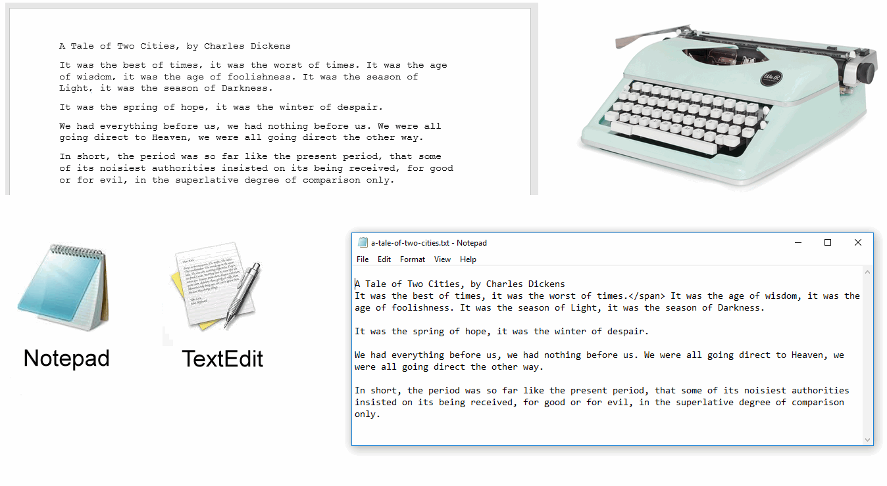

At the end of this Tutorial you will be able to:
You will work with two main types of files in these Tutorials:
Both HTML and CSS files are text files that can contain only letters (a,b,c, …), numbers (1,2,3, …) and various punctuation characters (;, ", ?, …) and symbols (€, ©, ®, …). Because text files can contain only those characters you can type on a keyboard, their content is similar to the output of paper documents created on old-style typewriters.
Text files can be created and edited with basic text editors such as Notepad (Microsoft Windows) and TextEdit (Apple Mac).
When working with often-complex HTML and CSS files, however, web designers and developers typically use text editors that offer a range of extra features that simplify the types of tasks they need to perform. In this Tutorial, you will learn about two such enhanced text editors: Microsoft Visual Studio Code and Sublime Text.
Follow these steps to download and install Microsoft Visual Studio Code on your computer.

Visual Studio will install and then open on your computer. You will see that Visual Studio has added an icon to your Windows desktop and is listed with your other applications on your Windows Start menu.

Follow these steps to set the most convenient preferences in Visual Studio for working with HTML and CSS.

You can now change various settings in Visual Studio.
Here are some settings you may wish to change:


You can now close the Settings window.
Among the other free-forever or free-to-try text editors for working with HTML and CSS files are the following:
A popular choice is Sublime Text. Follow the steps below to download and install it.

Sublime Text will install and then open on your computer. You will see that Sublime Text is listed with your other applications on your Windows Start menu.

You can start applications on your PC in a variety of ways. For those applications you will use frequently, it makes sense to add or ‘pin’ them to your Taskbar along the bottom of your Windows desktop. You can then launch any one of them with a single click.
To pin an application, follow these steps:

If future, when you need to launch Visual Studio, Google Chrome or other pinned applications, you can simply and quickly click the relevant icon on the Taskbar.

Return to Contents.